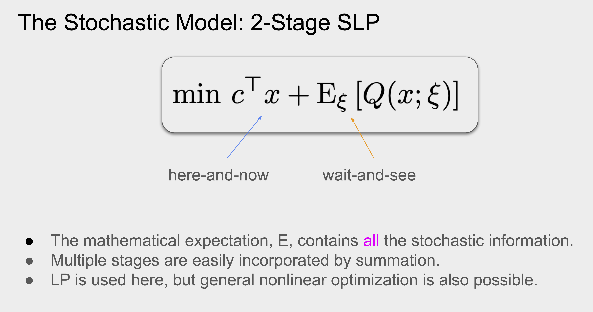
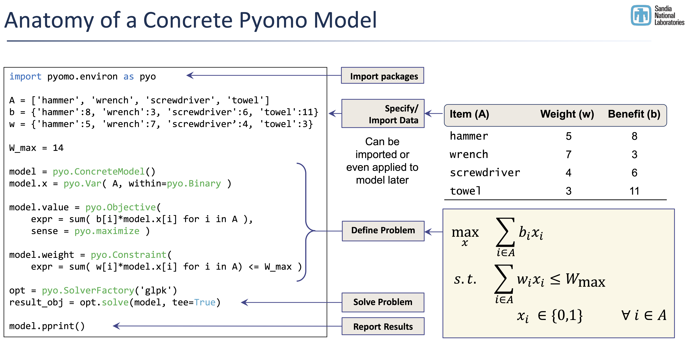

flowchart LR
A[/Input/] --> B["Model
Function"]
B --> C["pyomo
Model"]
C --> D[/"Optimal
Schedule"/]
Optimal Scheduling for Cross-Facility Workflows
Mark Asch
9-10 February, 2026
Plan
- Background and setting.
- Optimal Scheduling formulation for the CDT.
- Implementation.
- Examples.
For details, see the online user-guide.
OBJECTIVE

Background and Setting
Setting
- Cross-facility workflows are complex beasts made up of:
- projects,
- jobs,
- facilities,
- limited resources:
- renewable,
- non-renewable.
What is optimal scheduling?
- We want to find an optimal schedule
- for a collection of jobs,
- to be executed on a set of facilities,
- subject to constraints on resources, availability, precedences (DAG).
- The optimization can be performed for various objectives, or combinations of these, such as
- project duration (time is money),
- cost (money is money),
- facility availability,
- environmental impact, etc.
- project duration (time is money),
Important
The presence of uncertainty plays a central role and is included in the optimization process.
Formulation for the CDT
Existing Formulations
CDT: a blend of two viewpoints

Figure 1: Two viewponts of the CDT: a facility-centered supply chain model (left) and a job-centered scheduling model (right). DC = data center, CC = compute center, J = job.
Formulation: MRCPSP
\begin{align} \min \quad & \sum_{t=\mathrm{EF}_J}^{\mathrm{LF}_J} t\cdot x_{J1,t} + \text{other terms}\\ \text{s.t.} \quad & \sum_{m=1}^{M_j} \sum_{t=\mathrm{EF}_J}^{\mathrm{LF}_J} x_{jm,t} = 1, \,\,\, j=1,\ldots, J , \\ & \sum_{m=1}^{M_j} \sum_{t=\mathrm{EF}_h}^{\mathrm{LF}_h} t \cdot x_{hm,t} \le \sum_{m=1}^{M_j}\sum_{t=\mathrm{EF}_j}^{\mathrm{LF}_j} (t - p_{jm}) \cdot x_{jm,t}, \,\,\, j=2,\ldots, J, \, h \in \mathcal{P}_j , \\ & \sum_{j=2}^{J-1} \sum_{m=1}^{M_j} k_{jmr}^{\rho} \sum_{q=\max\{t,\mathrm{EF}_j\} }^{\min \{ t+p_{jm}-1,\mathrm{LF}_j \}} x_{jm,q} \le K_r^{\rho}, \,\,\, r\in R^{\rho}, \, t=1,\ldots, \bar{T}, \\ & \sum_{j=2}^{J-1} \sum_{m=1}^{M_j} k_{jmr}^{\nu} \sum_{t=\mathrm{EF}_J}^{\mathrm{LF}_J} x_{jm,t} \le K_r^{\nu}, \,\,\, r\in R^{\nu}, \\ & x_{jm,t} \in \{0,1\}, \,\,\, j=1,\ldots,J, \, m=1,\ldots ,M_j, \, t =0,\ldots, \bar{T}, \end{align}
Formulation: MRCPSP Binary Decision Variable
For every activity/job j, in mode m and for every feasible completion time t \in [\mathrm{EF}_j, \mathrm{LF}_j], x_{jm,t} = \begin{cases} 1, \quad \text{if activity $j,$ in mode $m,$ finishes at time $t,$} \\ 0, \quad \text{otherwise.} \end{cases}
where p_{jm} is the duration of job j in mode m, \mathcal{P}_j is the set of predecessors of job j, the earliest finish and latest finish times of job j are denoted \mathrm{EF}_j, \mathrm{LF}_j, an upper bound on the project’s makespan is given by \bar{T}, and we have denoted renewable resources by the index \rho and non-renewables by \nu.
- Objective (1) is the minimization of the makespan, to which we can add any cost function of the duration.
- Constraints (2) indicate that each activity is assigned exactly one mode and exactly one finish time,
- EQ. (3) ensures that no activity is started until all its predecessors are finished.
- EQ. (4) ensures that the per-period levels of the renewable resources are met.
- Consumption of the non-renewable resources is limited to their availabilities by (5).
- Finally, restricting the summations over time to the intervals [\mathrm{EF}_j, \mathrm{LF}_j] reduces drastically the number of variables and gives better convergence. These time windows can be computed by simple forward and backward recursion loops. This produces what is known as a tighter formulation.
Formulation: Stochastic Linear Programming
Figure 2: Objective function for a two-stage decision process with uncertainty. The deterministic term is based on actual knowledge. Stochastic exogenous inputs \xi become known afterwards.
Formulation: Stochastic Dynamic Programming

Figure 3: A multistage decision process with uncertainty. Stochastic, exogenous inputs \xi_t arrive, starting from stage t=2, and trigger subsequent recourse actions.
Caution
In the long run we are all dead. (J.M. Keynes)
Implementation
CDT-Based Implementation
Code
- Input description of jobs (
jsonfile), that is loaded into … - Model function, that generates …
pyomoModel, which produces …- Output, an optimal schedule (csv file).
Input File
4 entities
| Entity | Description |
|---|---|
| Resources | Available resources with capacities (renewable per period, non-renewable) |
| Jobs | Units of work to be scheduled |
| Modes | Alternative execution options for each job |
| Precedences | Directed edges defining the execution order (DAG) |
Entities
1. Resources
| Field | Type | Required | Description |
|---|---|---|---|
resource_id |
string | yes | Unique identifier for the resource |
name |
string | no | Human-readable name |
capacity |
integer ≥ 0 | yes | Maximum units available/time period |
2. Jobs
| Field | Type | Required | Description |
|---|---|---|---|
job_id |
string | yes | Unique identifier for the job |
name |
string | no | Human-readable name |
release_time |
integer ≥ 0 | no | Earliest start time (default: 0) |
deadline |
integer ≥ 0 | no | Latest finish time (default: none) |
Entities (contd.)
3. Modes
| Field | Type | Required | Description |
|---|---|---|---|
mode_id |
string | yes | Unique identifier for the mode |
job_id |
string | yes | Reference to parent job |
duration |
integer ≥ 0 | yes | Processing time in periods |
cost |
float ≥ 0 | yes | Cost of selecting this mode |
resource_requirements |
list | yes | Resources consumed during execution |
4. Precedences
| Field | Type | Required | Description |
|---|---|---|---|
predecessor |
string | yes | job_id of job that must finish first |
successor |
string | yes | job_id of job that must start after |
lag |
integer ≥ 0 | no | Minimum time gap between finish and start (default: 0) |
Entities - json file
{
"problem_name": "string (optional)",
"horizon": "integer (optional, planning horizon)",
"resources": [
{
"resource_id": "string",
"name": "string (optional)",
"capacity": "integer"
}
],
"jobs": [
{
"job_id": "string",
"name": "string (optional)",
"release_time": "integer (optional, default 0)",
"deadline": "integer (optional, default null)"
}
],
"modes": [
{
"mode_id": "string",
"job_id": "string",
"duration": "integer",
"cost": "number",
"resource_requirements": [
{
"resource_id": "string",
"demand": "integer"
}
]
}
],
"precedences": [
{
"predecessor": "string (job_id)",
"successor": "string (job_id)",
"lag": "integer (optional, default 0)"
}
]
}Using PYOMO
Figure 5: PYOMO implementation for the knapsack problem.
Using PYOMO for the CDT
Recall:
- input
- model function generation
- solve and output
import pyomo.environ as pyo
from pyomo.opt import SolverFactory
# INPUT
import json
with open("my-CDT.json") as f:
data = json.load(f)
# MODEL GENERATOR
model = CDT_model(data)
# MODEL SOLVE
opt = pyo.SolverFactory('glpk')
results = opt.solve(model, tee=True)
# OUTPUT -- model.pprint()
output = [{'Job': j,
'Machine': m,
'Start': model.start[j, m](),
'Duration': model.dur[j,m],
'Finish': model.start[(j, m)]() + model.dur[j,m]}
for j,m in model.TASKS]
visualize(output) # tables, GANTTs, etc.Examples
Use-Cases and Examples
- See Marius’ presentation.
- See the online user-guide.
Linear Program pyomo Example
\begin{array}{ll} \min & 2 x_1 + 3 x_2\\ \mathrm{s.t.} & 3 x_1 + 4 x_2 \geq 1\\ & x_1, x_2 \geq 0 \end{array}
Code
import pyomo.environ as pyo
from pyomo.opt import SolverFactory
model = pyo.ConcreteModel("Simple Linear")
# Decision variables and domains
model.x = pyo.Var([1,2], domain=pyo.NonNegativeReals)
# Objective function
model.OBJ = pyo.Objective(expr = 2*model.x[1] + 3*model.x[2])
# Constraint(s)
model.Constraint1 = pyo.Constraint(expr = 3*model.x[1] + 4*model.x[2] >= 1)
solver = 'appsi_highs'
SOLVER = pyo.SolverFactory(solver)
assert SOLVER.available(), f"Solver {solver} is not available."
# Solve and print solution
SOLVER.solve(model)
print(f"x = ({pyo.value(model.x[1]):.2f}, {pyo.value(model.x[2]):.2f})")
print(f"optimal value = {pyo.value(model.OBJ):.2f}")x = (0.33, 0.00)
optimal value = 0.67The code just follows the formulation—DSL-like.
Live Coding Examples - more
We observe in that there is a clear trend, up and down.
Live Coding Examples -silly
We observe in that there is a clear trend, up and down.
RESERVE
Formulations
Job-Centered vs Facility-Centered View
Code
graph LR
A[0] -->|"$$c_{0,1}$$"| B("$$J_1$$")
B -->|"$$c_{1,2}$$"| C("$$J_2$$")
C -->|"$$c_{2,3}$$"| D("$$J_3$$")
C -->|"$$c_{2,4}$$"| E("$$J_4$$")
D -->|"$$c_{3,5}$$"| F[5]
E -->|"$$c_{4,5}$$"| F
Code
flowchart LR
A[(DC1)]:::otherclass --> C{{HPC1}}:::thirdclass
B[(DC2)]:::otherclass
A --> D{{HPC2}}:::thirdclass
%%A[(data1)]:::someclass --> E{{HPC3}}:::thirdclass
C --> F[(DC1)]:::otherclass
C --> G[(DC2)]:::otherclass
F --> H{{HPC1}}:::thirdclass
F --> I{{HPC2}}:::thirdclass
classDef someclass stroke:#f00
classDef otherclass stroke:#0f0
classDef thirdclass stroke:#00fflowchart LR
A[(DC1)]:::otherclass --> C{{HPC1}}:::thirdclass
B[(DC2)]:::otherclass
A --> D{{HPC2}}:::thirdclass
%%A[(data1)]:::someclass --> E{{HPC3}}:::thirdclass
C --> F[(DC1)]:::otherclass
C --> G[(DC2)]:::otherclass
F --> H{{HPC1}}:::thirdclass
F --> I{{HPC2}}:::thirdclass
classDef someclass stroke:#f00
classDef otherclass stroke:#0f0
classDef thirdclass stroke:#00f
Exa-AtoW Project